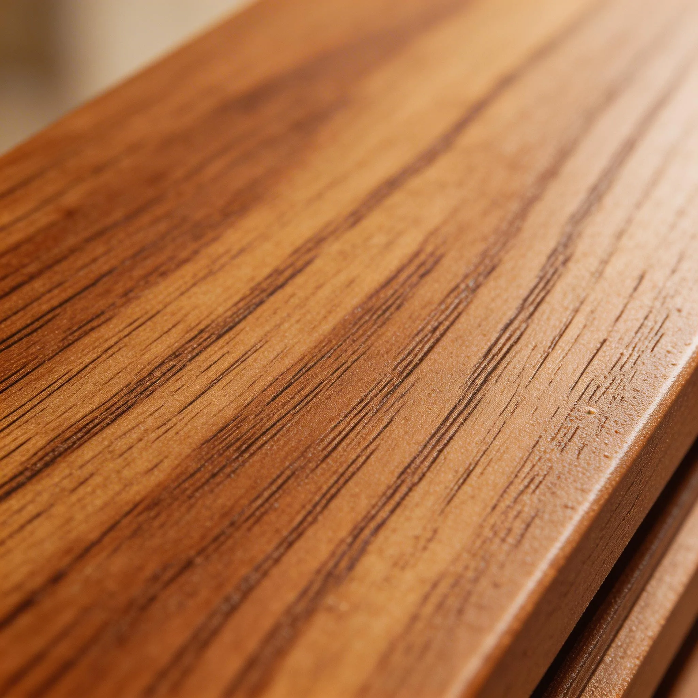

Are WPC wall panels waterproof?
“WPC” describes a broad family of wood–plastic composites, not one universal moisture rating. A buyer may be comparing a decorative indoor fluted board, an exterior cladding profile and a shower panel. Those products can have different formulations, joint details and permitted uses.

Do not treat every WPC wall panel or every WPC installation as waterproof. Ask whether the exact SKU is intended for the proposed wet exposure, then review joints, penetrations, substrate, fixing and drying paths.
Check the product’s intended use
Record whether the proposed wall is a dry-room feature, humid interior, splash zone or direct shower enclosure. Ask the supplier for a current specification identifying the core, face, dimensions and water-related test results. A brochure photo beside a bathroom sink does not establish direct shower approval. Likewise, an exterior WPC profile may have drainage and fastening details absent from an indoor decorative board.
Inspect the water pathways
Liquid water can enter behind cladding through joints, corners, screw holes, pipe penetrations and the bottom edge. Condensation can also develop where warm humid air meets a cooler wall. The exposed face may clean easily while the substrate remains vulnerable. The EPA’s building guidance makes this system view explicit: moisture performance is about design, construction and maintenance together.
Write a use boundary for distributors
For each WPC SKU, label approved environments and excluded uses. Keep the matching trim and fixing instructions with the sample. In a wet-room quotation, ask who designs the waterproofing layer and who inspects the wall before it is covered. This is more defensible than a blanket “100% waterproof” label, and it helps sales staff recommend the correct product rather than whichever sample looks closest.
Illustrative buyer situation
A coastal apartment developer wants fluted WPC in both the living room and shower corridor. The living-room sample has a warm wood look, but the supplier has not approved it for continuous splash exposure. The developer can use the decorative SKU in the dry area while separately evaluating a wet-zone system at the corridor wall. The schedule should include a joint and substrate detail, not just a brochure statement that WPC contains plastic.
Buyer checklist before ordering
- Exact indoor or exterior WPC product identity
- Evidence for the proposed water exposure
- Joint, penetration and substrate details
- Written maintenance and use exclusions
Save the approved sample, product code and document references with the purchase order. A catalog helps shortlist a finish but does not establish the final specification, local acceptance, price or delivery terms.
Common buyer questions
Does WPC contain plastic, so it cannot absorb water?
No. WPC formulations differ, and the wall assembly can still admit water at joints and penetrations.
Can WPC panels go inside a shower?
Only if the exact system is approved for that use and the complete wet-area detail is designed.
Is exterior WPC the same as indoor WPC?
No. Intended use, construction and fixing can differ significantly.
Compare the range and request the exact specification
Browse the relevant product catalog (PDF, English), then tell Luvie the destination market, room or project use, approximate quantity and the finish you want to sample. We can discuss which current SKU and documents are available; do not assume a catalog image establishes certification or a guaranteed lead time.
Turn the question into a verifiable product brief.
Send the application and target market so the conversation starts with a specific product, sample and evidence request.
Ask Luvie about this use